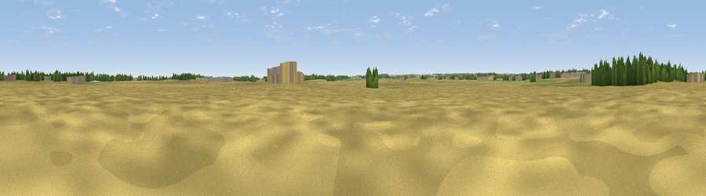

Viewpoint near Sleaford
#45750 in England · top 94% of its area beats it · near SleafordThe view, rendered

A 360° render of this exact spot computed from the terrain model, tree cover and land cover — summer colours, afternoon light, calibrated against photographs of famous viewpoints. Real trees, hedges and buildings will differ in detail.
The panorama
Grey silhouette: terrain skyline in each direction (720 bearings, Earth curvature and refraction included). Dashed green: skyline with trees (+15 m) and buildings (+8 m) as obstacles. Blue strip: how far the ground is visible on each bearing.
Where the view opens
Wedge length = distance to the farthest visible ground on that bearing (vegetation-aware). Rings at 10, 25 and 50 km.
What fills the view
75% cropland · 13% grassland · 7% woodland · 5% built-up
Angular shares of the visible panorama (visual magnitude), not map area. Landscape diversity 0.36 (0–1 Shannon).
Key numbers
More beautiful places nearby
The staircase of upgrades: each row has a higher view potential than everything closer. Driving times are estimates from straight-line distance, calibrated against real road routing — check an actual route before setting out.
| Place | Direction | Drive | Score |
|---|---|---|---|
| Kirkby Mount | E · 2 km | ~5 min | 23.3 |
| Quarrington Hill | WNW · 2 km | ~6 min | 27.7 |
| Viewpoint near Ewerby | ENE · 5 km | ~11 min | 28.0 |
| North Hill | WSW · 6 km | ~13 min | 29.3 |
| Viewpoint near Aisby | SW · 7 km | ~14 min | 38.1 |
| Normanton Hill | WNW · 12 km | ~22 min | 49.8 |
| Viewpoint near Belton | WSW · 13 km | ~24 min | 51.0 |
| Summerfield's Hill | W · 15 km | ~27 min | 51.5 |
52.98434, -0.40146 · source: osm peak · position refined by local search. Computed location — check access rights before visiting.